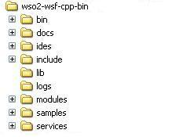

This section is aimed to help you get a Web service running in a short time using WSF/C++, and consume that service using WSF/C++ client.
First, download the latest binary release from WSO2 WSF/C++ homepage. Once you download the correct binary that suits your platform, all that you require to get it running is to extract the package to a folder of your choice, and set the WSFCPP_HOME environment variable to point to this extracted folder. For Linux, you may have to set the LD_LIBRARY_PATH environment variable to include the lib folder (e.g. add $WSFCPP_HOME/lib). For MS Windows, you will have to add the lib folder to your PATH variable to include the WSF/C++ DLLs to your path.
Now you should be able to change the directory to the bin folder of the extracted folder, and run the simple axis server in one command shell. Then change the directory to samples/bin in another command shell and run any of the samples there (you may have to set the environment variables in this new shell as well). Please see the installation guide for more detailed explanation.
Once you have WSF/C++ up and running successfully, you can start writing your own services and clients. The following sections explain how to write your first service and client with WSF/C++..
Let's see how you can write your first Web Service with WSF/C++ and how to deploy it.
The first service that we are going to write is named "hello" with a single operation named "greet" in the service. This "greet" operation, when invoked by the client, will expect the client to send a greeting in the request, and in turn send a greeting in the response. Following are examples of XML payloads exchanged between the client and the service:
Request:
<greet>
Hello Service!
<greet>
Response:
<greetResponse>
Hello Client!
<greetResponse>
The steps to be followed when implementing a service with WSF/CPP include
init(), invoke(), and onFault() are the methods that are defined in the ServiceSkeleton class should be implemented
by the service. Within the init() method, any service specific initialization can be done. Within the invoke method, the selection of which method should be
called is handled. onFault() should implement the logic for handling fault senarion in a service.Look for the greet method in the hello.cpp source file.
This method implements the business logic for the greet operation. We will be calling
this method from our implementation of the invoke method.
Basically, this method
receives the request payload as an
OMElement. process it to understand
the request string, and
prepares the response as an OMElement and
returns it back.
The invoke method of the ServiceSkeleton is the point of entry for invoking the operations. Hence in our implementation of the invoke method, we have to define how the operations are to be called.
Look for the invoke method in the hello.cpp source file.
In our implementation of the invoke method, we call the greet method which implement the greet operation. As we have only one
operation, the task is simple here. If we had multiple operations, we will have to look into the information in the MessageContext to map it to the exact
operation. The WSF/CPP framework will call the invoke method with an OMElement, containing the request payload, and MessageContext
instance, containing the MessageContext
information.We can use the MessageContext to extract whatever information we deem necessary that is related to the incoming message. The WSF/CPP framework
expects the invoke method to return a pointer to an OMElement, representing the response payload.
The services.xml file contains details on the service that would be read by the deployment engine during server start up time. The following shows the contents for the services.xml file for the hello service.
<service name="hello">
<parameter name="ServiceClass" locked="xsd:false">hello</parameter>
<description>
Quick start guide hello service sample.
</description>
<operation name="greet"> <messageReceiver class="wsf_cpp_msg_recv" /> </operation>
</service>
The service configuration shown above specifies that the name
of the
service is hello.
The value of the "ServiceClass", "hello"
in this case, will be mapped
to the
service implementation by the deployment engine as libhello.so on Linux or
hello.dll on MS Windows. The description element contains a brief
description
of the service. There can be one or more operation elements. For this sample, we
only have one operation, with the name "greet".
It is important to specify the messageReceiver option as well. Message Recevier
is the handler which finds the correct service and calls the invoke method. Since
WSF/CPP is built on top of WSF/C, you are able to deploy services written in both
C and C++. Therefore , there exist message receivers for both C and C++. If you
do not specify the message Receiver option, it will pick the default message receiver,
which is the C one.
You can compile the service sample as shown below.
On Linux:
gcc -shared -olibhello.so -I$WSFCPP_HOME/include -I$WSFCPP_HOME/include/axis2-1.6.0/ -L$WSFCPP_HOME/lib -laxutil -laxis2_axiom -laxis2_parser -laxis2_engine -lwso2_wsf -lpthread -laxis2_http_sender -laxis2_http_receiver hello.cpp
On MS Windows:
to compile,
cl.exe /D "WIN32" /D "_WINDOWS" /D "_MBCS" /D "AXIS2_DECLARE_EXPORT" /D "AXIS2_SVR_MULTI_THREADED" /w /nologo /I %WSFCPP_HOME%\include /c hello.cpp
to link,
link.exe /nologo /LIBPATH:%WSFCPP_HOME%\lib axutil.lib axiom.lib axis2_parser.lib axis2_engine.lib wso2_wsf.lib /DLL /OUT:hello.dll *.obj Make sure to run the vcvars32.bat file before running the compilation commands. vcvars32.bat file set the correct environment settings.
To make the service available to be consumed by the clients, we have to deploy the service. To deploy the service, you have to create a folder named 'hello' in the WSFCPP_HOME/services folder, and copy the services.xml file and the shared library file (libhello.so on Linux or hello.dll on MS Windows) into that folder.
To verify that your service has been correctly deployed, you can start the simple axis server and then browse the list of deployed services using a Web browser. To start the simple axis server, you can go to the WSFCPP_HOME/bin folder and run the executable axis2_http_server. The default URL that you can test the service list with is http://localhost:9090/axis2/services. You should get an entry for the hello service on the page that is displayed.
WSF/CPP does not support dynamic WSDL generation. However, it is possible to attach the contract you used to generate the service skeleton, to the respective service. This can be done in two ways.
If you choose the first option, you will have to copy the WSDL
file to the folder in which the service DLL is found. The name of the
WSDL file should be the name of the service. And, if you choose the
second option, you will have to make use of the wsdl_path
parameter in the services.xml file. More info on how this can be done
is found under the services.xml
section.
An example of the second option can be found the services.xml of the echo sample service, which is commented. An example of the first option in use is seen in the Calculator sample service.
The static WSDL file can be accessed by appending ?wsdl
to the service end-point. You can view the WSDL provided for the
Calculator sample, by pointing to http://localhost:9090/axis2/services/Calculator?wsdl.
Now that you know how to write a service with WSF/CPP , let's see how to write a client to consume that service. The request payload that the client will be sending to the service was described in the above section. The client has to prepare the payload, send it to the service, and then receive and process the response.
The steps to be followed when implementing a client with WSF/CPP:
Options class provide
methods for configuring the client. For example, you can use setTo() method
in the Options classs to set the
endpoint address of the service to be consumed by the client. ServiceClient class provides the basic client API for
consuming Web services. It provides a simplified and easy to use API. ServiceClient
takes has 3 different constructors. A ServiceClient instance can be created by providing
the repository location. For the purpose of our sample, you can use the WSFCPP_HOME
as the repository. The concept of repository
is explained in detail in a later section.options = new Options();
address = "http://localhost:9090/axis2/services/hello";
options->setTo(address);
In the above section of code, an Options instance is created first. You can specify the Then an endpoint reference instance is created with the address of the location of the service. Finally, the created endpoint is set as the "to" address of the options. The "to" address indicates where the request should be sent to.
svcClient = new ServiceClient(clientHome);
svcClient->setOptions(options);
payload = buildRequest();
response = svcClient->request(payload);
After creating and preparing the options, the next step is to create a service client instance and use it to send the request and receive the response. The code fragment given above shows how options can be set on top of the ServiceClient and how to invoke the request operation with a request payload. Once the response is received, the response payload will be stored in the response, which is a pointer to an OMElement that can be used to process the response further.
You can compile the client sample as shown below.
On Linux:
gcc -o hello -I$WSFCPP_HOME/include/axis2-1.6.0/ -L$WSFCPP_HOME/lib -laxutil -laxis2_axiom -laxis2_parser -laxis2_engine -lpthread -laxis2_http_sender -laxis2_http_receiver -lwso2_wsf hello.c -ldl -Wl,--rpath -Wl,$AXIS2C_HOME/lib
On MS Windows:
to compile,
cl.exe /nologo /D "WIN32" /D "_WINDOWS" /D "_MBCS" /I %WSFCPP_HOME%\include /c hello.c
to link,
link.exe /LIBPATH:%WSFCPP_HOME%\lib axutil.lib axiom.lib axis2_parser.lib axis2_engine.lib wso2_wsf.lib /OUT:hello.exe *.obj
WSF/C++ uses the same repository structure used by WSF/C. Therefore the following description of Repository folder is valid for WSF/C++ as well.
Repository is a folder where all Axis2/C related configurations as well as services and modules are located. The following shows the folder structure of the repository:
Here the name of the repository folder is axis2c_repo. In your system, you can specify any folder name of your choice. There are three sub folders available in the repository. In addition to that, the axis2.xml configuration file is also located in the repository. The following table describes the purpose of the repository contents.
| Folder/File Name | Description |
|---|---|
|
lib |
The lib folder contains the libraries required to run the Axis2/C engine. While you can afford to have the shared libs of Axis2/C in a location of your choice, the dynamically loaded shared libs, parser, transport receiver and transport sender has to be in the repository lib folder. It is mandatory that the lib folder is there in the repository. In addition to WSF/C libraries, lib folder contains WSF/C++ specific library files which include C++bindings to WSF/C and Rampart Security Library |
|
modules [optional] |
The modules folder contains the modules deployed with Axis2/C. Each module deployed will have its own sub folder inside the modules folder. For example, if the addressing module is deployed, then there will be a sub folder named addressing inside the modules folder of the repository. At deployment, the Axis2/C deployment engine would traverse the modules folders to find out what modules are available. The modules folder is optional. If it is empty or non-existent, that means that there are no deployed modules. |
|
services [optional] |
The services folder contains the services deployed with Axis2/C. Each service deployed will have its own sub folder inside the services folder, or live inside one of the sub folders. At deployment, the Axis2/C deployment engine will traverse the services folders to find out what services are available. The services folder is optional. If it is empty or non-existent, that means that there are no deployed services. |
|
axis2.xml |
The axis2.xml file is the configuration file of Axis2/C. |
Both clients as well as the services written using WSF/C++ can use the same repository. However you can use one repository for the server side and another one for the client side. The services folder is used only when the repository is used by the server side. When the repository is used by the client, the services folder, if present, will not be used.
The WSF/C++ binary distribution, when extracted, can be considered as ready for use as your repository folder. If you are building WSF/C++ from the source distribution, when you build the source, including the samples, the installation destination will be ready for use as your repository folder. The simple axis server (that is axis2_http_server binary), the client samples, and the HTTPD module (Axis2 Apache2 module) require the repository folder to be specified in order to run correctly.
As described earlier, all the modules are placed inside the
modules folder
of the repository, and each module will have its own sub folder within
the
modules folder.
The folder in which a module is placed must have the same name as the
module
name. For example, the addressing module will be placed in a sub folder
named
addressing.
Inside the folder corresponding to a module, the shared library implementing the module and the module configuration file, module.xml, is placed. It is a must that these two files are present inside each folder representing a module. The module.xml file will be processed by the deployment engine to find out module specific information such as the module name, set of handlers, the flows into which those handlers are to be added, etc.
All the services are placed inside the services folder of the repository, and each service will be in one of the sub folders within the services folder. Axis2/C has a concept called service groups, where there can be one or more services inside a service group. A single stand alone service is assigned a service group with the same name as that of the service by the Axis2/C engine for the purpose of easy handling. Therefore the sub folders in the services folder correspond to the service groups.
A service, if deployed as a stand alone service, will reside inside a folder with the same name as that of the service. For example, the echo service will be placed in a sub folder named echo. The shared library implementing the service and the service configuration file, the services.xml, will be placed inside the folder corresponding to a service. Given the fact that the engine treats the folders to represent service groups and not a single service, the configuration file is called services.xml. However, you can always place a single service inside a single folder, which is the most common use case.
Each sub folder within the services folder should have at least one shared lib implementing a service and a services.xml file. If it is a real service group, there will be multiple shared libs, yet there is only one services.xml file configuring all those services. The services.xml file is processed by the deployment engine to find out the service group and the service specific information such as the service group name, service name, the set of operations for each service, etc.
We have already seen how to write a service in the Quick Start Guide section of this manual. This section covers the service API of WSF/C++ in more detail.
ServiceSkeleton class
is an interface for implementing services. WSF/C++ does not provide
any concrete implementation of this interface. It is the responsibility
of
the service implementers
to implement this interface. To implement the interface, you should implement the
virtual functions defined in the ServiceSkeleton class. Then, include the WSF_SERVICE_INIT
macro which preforms the service loading and unloading work.
The following table details the signatures of the virtual methods defined in the ServiceSkeleton class that should be implemeneted by a service implementation.
| Function Signature | Description |
|---|---|
virtual void WSF_CALL init(); |
Initializes the Service object instance. This method is called from the engine once per deployed service, during the first request made to the service. |
virtual OMElement* invoke(OMElement *inMsg, |
Invokes the service implementation. You have to implement the logic to call the correct functions in this method based on the name of the operation being invoked. |
virtual OMElement* onFault(); |
This method is called by the engine if a fault is detected. |
virtual ~ServiceSkeleton(); |
Implement the service specific destructor for freeing resources allocated by the service. |
Include the WSF_SERVICE_INIT(<Service Class Name>) within your service code. This macro takes the service constructor name as the agrument which is used to instantiate an instance of the service class. This instantiated object is loaded to the system and is used for services invocations their after.
Note that service object instantiation happens once per service. When the first request is received by the service, a service instance is created and initialized. The same object instance will be re-used by the subsequent requests.
You can find an example on how to implement the service skeleton interface in the hello.cpp source file, which is the example used in the Quick Start Guide. More advanced samples can be found in the samples folder of the WSF/CPP distribution.
The primary client API to be used with WSF/CPP is ServiceClient API. This
is meant to be an
easy to use API for consuming services. If you want to do more complex
tasks,
such as invoking a client inside a module, or wrap the client API with
another interface, you may need to use axis2_op_client API which would require writing
some C code.
The behavior of the ServiceClient can be fine tuned with the Options instance passed to the ServiceClient. You can set the options by creating an Options instance. The bare minimum that you need to set is the endpoint URI to which the request is to be sent. An example of this was given in the Quick Start Guide section.
The ServiceClient interface serves as the primary client interface for consuming services. You can set the options to be used by the service client and then invoke an operation on a given service. There are several ways of invoking a service operation. The method of invoking an operation depends on 3 things. They are,
Many service operation invocation scenarios can be obtained by combining the above three factors. The ServiceClient provides the necessary API calls to achieve this.
Deciding the Message Exchange Pattern (MEP)
There are 2 message exchange patterns.
In the Out-Only MEP, the client doesn't expect a reply from the server. The service client provides two methods of using the Out-Only MEP.
| Service Client Method Signatures | Description |
|---|---|
WSF_EXTERN bool WSF_CALL send(OMElement * payload, std::string action) throw (AxisFault); WSF_EXTERN bool WSF_CALL send(OMElement * payload, std::string operation, std::string action) throw (AxisFault); |
These methods are used to interact with a service operation whose MEP is Robust Out-Only. If an error happenes , it will be reported back to the client. Also client side errors will be reported such as host unknown |
WSF_EXTERN bool WSF_CALL send(OMElement * payload, bool robust, std::string operation, std::string action) throw (AxisFault); WSF_EXTERN bool WSF_CALL send(OMElement * payload, bool robust, std::string action) throw (AxisFault); |
These methods are used to interact with a service operation whose MEP is Out-Only.
When the robust option is set to true,t his method reports any
errors back to the caller if a fault triggers
on the server side. When
robust options is set to false, the server side errors will not
be reported, however the client errors will be reported.
|
WSF_EXTERN OMElement * WSF_CALL request(OMElement * payload, std::string action) throw (AxisFault); WSF_EXTERN OMElement * WSF_CALL request(OMElement * payload, std::string operation, std::string action) throw (AxisFault); |
These methods are used to interact with a service operation whose MEP is In-Out. It sends an XML request and receives an XML response. Returns a pointer to the OMElement representing the XML response. This method blocks the client until the response arrives. |
WSF_EXTERN OMElement * WSF_CALL request(OMElement * payload, ICallback * callback, std::string action) throw (AxisFault); WSF_EXTERN OMElement * WSF_CALL request(OMElement * payload, ICallback * callback, std::string action) throw (AxisFault); |
These methods are used to interact with a service operation whose MEP is In-Out. It sends an XML request and receives an XML response. By specifying the callback, the methods allows aysnchrnous invocations. In this case, the method return after sending the request, and the callback will be invoked, when the response is received. |
Please have a look at the ServiceClient.h
header file for
more information on the above mentioned functions, as well as other methods which allowed different
configuration options..
This will determine whether the client would block for the
response
(synchronous) or return immediately expecting the response to be
handled by a
callback (asynchronous, in other words non-blocking) in an Out-In MEP
scenario.
Request method can be used for both Synchonous and Asynchnonous mode of invocations.
The paremeters passed will determine the behaviour of the method as described above.
If the transport is two-way, then only one channel is used,
which means
the request is sent and the response is received on the same channel.
If the
transport is one-way, then the request is sent on one channel and the
response is received on a separate channel.
If we want to use a separate channel for the response, a separate
listener
has to be started to receive the response, This can be done by setting
the
separate listener option to true using the
setUseSeparateListener method in above the
options.
Please have a look at the echo_blocking_dual
sample to see
how to set the separate channel option.
Please see Appendix D for further details on setting options.
WSF/CPP comes with plain old XML (POX) like REST support. A
given service
can be exposed both as a SOAP service as well as a REST service. By
default,
your service will support SOAP as well as REST, however, your service
operations
will only be available for SOAP. In order to enable REST for your
operations you
need to add one or more parameters under your operation, in the services.xml.
If you want to consume Web services using REST style calls, you can use
the HTTP
POST method, the HTTP GET method, the HTTP HEAD method, the HTTP PUT
method or
the HTTP DELETE method.
The following example code fragment shows how to set up a client enabling a REST style invocation.
Use the setEnableREST method to configure the client for a REST Style invocation.
You can use the same code that you use with a SOAP call, and do REST style invocation by just enabling REST using the option setting shown above.
The default HTTP method used with REST is HTTP POST. If you need to change it to the HTTP GET method, the following needs to be done.
options->setHTTPMethod(AXIS2_HTTP_GET);
Similarly you can use AXIX2_HTTP_HEAD to change it to the HTTP HEAD method, or AXIX2_HTTP_PUT to change it to the HTTP PUT method, or AXIX2_HTTP_DELETE to change it to the HTTP DELETE method.
Please have a look at the echo_rest
sample for a complete
source code on how to use REST.
You basically need to add the REST Location, and the REST
Method parameters to the services.xml
to enable REST in a service operation. The REST location is the
template that needs to be matched
to find your operation, and the REST Method is the HTTP Method
associated with the service.
Note that the REST Method is optional for each operation. If no REST
Method is specified, POST,
will be assumed. Optionally you may specify the default REST Method for
all operations at the service
level. Then, if you haven't specified a REST Method for your operation,
the default REST Method
specified will be assumed instead of POST. Please have a look at the echo
sample
service for a complete source code on how to set up REST. Shown below
is an example, on how to
configure the locate operation to work with
HTTP GET on REST.
<operation name="locate">
<parameter name="RESTMethod">GET</parameter>
<parameter name="RESTLocation">location/{lat}/{long}</parameter>
</operation>
The corresponding request would look like, http://www.sample.org/service/location/34N/118W,
which would return Los Angeles, California. In here, the portion location
is fixed and lat and long
are optional parameters which will be captured to the payload.
It is also possible to enable a single service operation for
SOAP as well as REST. This can be done by specifying a REST Location
that does not contain the operation name. The locate
operation is an example to such a case. Thus, for a SOAP invocation,
you need to use http://www.sample.org/service/locate,
as the end point or WS-Addressing Action.
WSF/CPP allows you to send and receive binary data with SOAP messages using MTOM/XOP conventions. When sending and receiving attachments, you have to use the ServiceClient API to perform the send and receive operations, and provide or consume binary data in relation to the AXIOM payloads.
In order to send a binary attachment, you need to build the AXIOM payload and attach the data handler with binary content to the payload.
<soapenv:Body>
<ns1:mtomSample xmlns:ns1="http://ws.apache.org/axis2/c/samples/mtom">
<ns1:fileName>test.jpg</ns1:fileName>
<ns1:image>
<xop:Include xmlns:xop="http://www.w3.org/2004/08/xop/include"
href="cid:1.f399248e-8b39-1db1-3124-0015c53de2e5@apache.org"></xop:Include>
</ns1:image>
</ns1:mtomSample>
</soapenv:Body>
In the above sample payload shown, we place our image file as text within an image element
imageEle = new OMElement("image");
dataHandler = new OMDataHandler(filename,"image/jpeg");
dataText = OMText(imageEle, dataHandler);
When sending attachments, you can configure the client either to send the attachment in the optimized format or non-optimized format.
To do this, set the option options->setEnableMTOM(true); or the setting
<enableMtom>true</enableMtom> in
axis2.xml
If enableMTOM is set to True, the attachment is sent as it is, out of the SOAP body, using MIME headers. Also the payload will have an XOP:Include element, referring to the MIME part that contains the binary attachment. Sending the attachment as it is, in pure binary format, is called binary optimized format. In the case of binary non-optimized format, where enableMTOM is False, the attachment content is sent in the payload itself, as a base64 encoded string.
A module is a set of handlers that helps to extend the message processing behavior of the engine. Modules have the concepts of being Available and Engaged associated with them. Available means modules are deployed in the system but not activated. They will be activated only after being engaged. Every module comes with its own module.xml file . This module.xml file specifies the module specific handlers and the phases into which the handlers are to be placed in the handler chain. Some of the module specific handlers may be put into system predefined phases. In that case, the module.xml file should specify where to put the handlers relative to the others in that phase. Sometimes a module may define its own phase. In that case, some of the module specific handlers may be put into that phase. The handlers added to the system predefined phases (global handlers) are invoked for every message that comes to or goes out from the system. The handlers in the module specific phase are invoked only for the messages invoking the operations that engage that module. Engaging a module means correctly adding the handlers of a particular module to one or more phases. Once the module is engaged, the handlers and the operations defined in the module are added to the entity that engaged them.
Before engaging a module, the following steps have to be followed.
The following is an example of engaging a sample module called the logging module with Axis2/C:
In the module.xml file, the handlers of the module and the phases to which they are to be added have to be specified. Below is the module.xml file of the sample logging module.
<module name="logging" class="axis2_mod_log">
<inflow>
<handler name="LoggingInHandler" class="axis2_mod_log">
<order phase="PreDispatch"/>
</handler>
</inflow>
<outflow>
<handler name="LoggingOutHandler" class="axis2_mod_log">
<order phase="MessageOut"/>
</handler>
</outflow>
<Outfaultflow>
<handler name="LoggingOutHandler" class="axis2_mod_log">
<order phase="MessageOut"/>
</handler>
</Outfaultflow>
</module>
In the above shown module configuration file, the name of the module is logging. There are two handlers in this module, the LoggingInHandler and the LoggingOutHandler. The LoggingInHandler is placed into the PreDispatch phase of the in flow. The LoggingOutHandler is placed into the MessageOut phase of both the out flow and the fault out flow.
The above module.xml file should be copied to a folder named "logging" (because the module name is "logging") inside the AXIS2C_INSTALL_DIR/modules folder. The module libraries containing the handler implementation should also be copied to the same folder. According to the module.xml file shown above, the name of the shared library file should be libaxis2_mod_log.so on Linux and axis2_mod_log.dll on MS Windows.
Module specific phases have to be added after the system
predefined
phases. The following example shows where to add the module specific
phases.
Look for the phaseOrder elements in the
axis2.xml file. Note the
comment lines:
<!-- User defined phases could be added here -->
You can add user defined phases after the above comment line
into any of the
flows. The type attribute of the phaseOrder
element
indicates the flow.
For the logging module example, user defined phases are not required. All the module specific handlers are added to system predefined phases as specified in the module.xml file.
The following is an example of engaging the logging module to
the echo
service. This can be done by simply adding <module
ref
="logging"/> in the services.xml file of the echo
service. This
informs the Axis2/C engine that the module "logging" should be engaged
for
this service. The handlers inside the module will be executed in their
respective phases as described by the module.xml.
<service name="echo">
<module ref ="logging"/>
<parameter name="ServiceClass" locked="xsd:false">echo</parameter>
<description>
This is a testing service, to test if the system is working or not.
</description>
<operation name="echoString">
<!--messageReceiver class="axis2_receivers" /-->
<parameter name="wsamapping" >
http://ws.apache.org/axis2/c/samples/echoString
</parameter>
</operation>
</service>
One important thing to note here is that because the logging module's handlers are placed into the global phases, even though the logging module is engaged only to the echo service, the module will be engaged globally. This is a feature of the Axis2 architecture, not a bug. When invoked, the handlers in a module can check whether the module has been engaged to a particular service, and act accordingly.
If we want to engage a module for every service deployed in
the Axis2/C
system, we can add the <module ref
="logging"/> entry in
the axis2.xml file. This will inform the Axis2/C engine to invoke the
handlers associated with the module for every message coming in or
going out
for all the services deployed.
On the client side, if <module ref
="logging"/> is
added in the axis2.xml, the handlers specific to the logging module
will be
invoked for every request the client sends and every response the
client
receives. If only a particular client wants to engage the module, it
can be
done by engaging the module programmatically. This can be done by
adding the
following line in the client code after setting the options.
svcClient->engageModule("module-name");
Remember to replace "module-name" with the name of the module you want to engage. For example to engage the addressing module you can use:
svcClient->engageModule(AXIS2_MODULE_ADDRESSING);
WS-Addressing provides mechanisms to address Web services and messages. With WSF/CPP, you can use both WS-Addressing version 1.0 as well as the submission version.
WS-Addressing is implemented as a module. Hence as explained in the previous section, the addressing module can be engaged both on the client side as well as on the server side.
The WS-Addressing module can be globally engaged by adding the
<module ref="addressing"/> line
to the axis2.xml file.
The WS-Addressing module can also be programmatically engaged
using the
following line of code with the service client API
engageModule(AXIS2_MODULE_ADDRESSING);
WS-Addressing related options can be set using the methods in Options class.If the
addressing module is engaged, there are no options to be set on the
server
side. The server will employ WS-Addressing if the incoming requests
have
WS-Addressing headers.
There is a mandatory requirement for using WS-Addressing on the client side with WSF/CPP. That is to set a WS-Addressing action that represents the operation to be specified in the request or send method
svcClient->request(payload, "http://ws.apache.org/axis2/c/samples/echoString");
In addition to the action, which is mandatory, there are other WS-Addressing related headers that can be sent in a message. WSF/CPP supports to set those headers as options at the client level. The following functions are used to set them.
SetReplyTo(<Reply to URI>);
Sets thewsa:ReplyToheader. The ReplyTo header contains the endpoint to send reply messages. The ReplyTo header is required when the response comes in a separate channel (when using a dual channel).
SetFaultTo(<Fault to URI>)
Sets the wsa:FaultTo header. This
contains the endpoint to
direct fault messages.
Simple Axis2 HTTP Server is the inbuilt HTTP server of Axis2/C which comes with
WSF/CPP.
Synopsis :
axis2_http_server [-p PORT] [-t TIMEOUT] [-r REPO_PATH] [-l LOG_LEVEL] [-f LOG_FILE] [-s LOG_FILE_SIZE]
You can use the following options with simple axis HTTP server.
-p PORT port number to use, default port is 9090
-r REPO_PATH repository path, default is ../
-t TIMEOUT socket read timeout, default is 30 seconds
-l LOG_LEVEL log level, available log levels:
0 - critical 1 - errors 2 - warnings
3 - information 4 - debug 5- user 6 - trace
Default log level is 4(debug).
-f LOG_FILE log file, default is $AXIS2C_HOME/logs/axis2.log
or axis2.log in current folder if AXIS2C_HOME not set
-s LOG_FILE_SIZE Maximum log file size in mega bytes, default maximum size is 1MB.
-h display the help screen.
Example :
axis2_http_server -l 3 -p 8080 -r $AXIS2C_HOME -f /dev/stderr
Synopsis :
axis2_http_server.exe [-p PORT] [-t TIMEOUT] [-r REPO_PATH] [-l LOG_LEVEL] [-f LOG_FILE] [-s LOG_FILE_SIZE]
You can use the following options with simple axis HTTP server.
-p PORT port number to use, default port is 9090
-r REPO_PATH repository path, default is ../
-t TIMEOUT socket read timeout, default is 30 seconds
-l LOG_LEVEL log level, available log levels:
0 - critical 1 - errors 2 - warnings
3 - information 4 - debug 5- user 6 - trace
Default log level is 4(debug).
-f LOG_FILE log file, default is %AXIS2C_HOME%\logs\axis2.log
or axis2.log in current folder if AXIS2C_HOME not set
-s LOG_FILE_SIZE Maximum log file size in mega bytes, default maximum size is 1MB.
-h display the help screen.
Example :
axis2_http_server.exe -l 3 -p 8080 -r %AXIS2C_HOME% -f C:\logs\error.log
To build WSF/CPP with the Apache HTTP server module, also called mod_axis2, you need to provide the following configuration options on the Linux platform:
./configure --with-apache2=[path to Apache2 include directory] [other configure options] NOTE: Some Apache2distributions, specially development versions, install APR (Apache Portable Run-time) include files in a separate location. In that case, to build mod_axis2, use: ./configure --with-apache2=[path to Apache2 include directory] --with-apr=[path to APR include directory]
[other configure options]
When building WSF/CPP, you will already have installed mod_axis2.so file to your install directory.
On the MS Windows platform, you have to provide the Apache2 install location in the configure.in file with the setting APACHE_BIN_DIR. Example:
APACHE_BIN_DIR = "C:\Program Files\Apache Software Foundation\Apache2.2"
Based on the Apache HTTP server version you are using, you also need to set the setting APACHE_VERSION_2_0_X in the configure.in file. If you are using Apache 2.2 family, this setting should be set to 0,else set it to 1.
APACHE_VERSION_2_0_X = 0
You will find the mod_axis2.dll in <WSFCPP_INSTALL_DIR>\lib directory when you have build the source.
NOTE: To execute some of the commands given below, you might require super user privileges on your machine. If you are using the binary release of Axis2/C, please note that it is built with Apache 2.2.
Copy the mod_axis2 shared library (libmod_axis2.so.0.6.0 on Linux and mod_axis2.dll on MS Windows) to the Apache2 modules directory as mod_axis2.so
On Linux
cp $WSFCPP_HOME/lib/libmod_axis2.so.0.6.0 /usr/lib/apache2/modules/mod_axis2.so
On MS Windows
copy /Y "%WSFCPP_HOME%\lib\mod_axis2.dll" C:\Apache2\modules\mod_axis2.so
Edit the Apache2's configuration file (generally httpd.conf) and add the following directives at the end of the file.
LoadModule axis2_module MOD_AXIS2_SO_PATH
Axis2RepoPath AXIS2C_INSTALL_DIR
Axis2LogFile PATH_TO_LOG_FILE
Axis2LogLevel LOG_LEVEL
Axis2ServiceURLPrefix PREFIX
Axis2MaxLogFileSize SIZE_IN_MB
<Location /axis2>
SetHandler axis2_module
</Location>
Please note that you have to fine tune the above settings to
mach your
system.
MOD_AXIS2_SO_PATH has to be replaced with the full path to
mod_axis2.so,
for example, /usr/lib/apache2/modules/mod_axis2.so
on Linux, or C:\Apache2\modules\mod_axis2.so
on MS Windows
AXIS2C_INSTALL_DIR has to be replaced with the full path to Axis2/C
repository, for example, /usr/local/axis2 on
Linux, or c:\axis2c on MS Windows. Note that
repository path should
have read access to the daemon user account under which the Apache2
HTTPD
process is run.
PATH_TO_LOG_FILE has to be replaced with the full path to where you
wish to
have the Axis2/C log file, for example, /tmp/axis2.log
on Linux, or C:\Apache2\logs\axis2.log on MS
Windows. Note that the log
file path should have write access to the daemon user account under
which the
Apache2 HTTPD process is run.
LOG_LEVEL has to be replaced with one of the following values: crit,
error,
warn, info, debug, trace. These log levels have the following meanings:
SIZE_IN_MB must be replaced by the size of the particular
resource in MB, rounded to
the nearest whole value.
PREFIX has to be replaced with the prefix to be used with the service
endpoints. This is optional and defaults to "services".
As an example, if you have "web_services" as the prefix, then all the
services hosted would have the endpoint prefix of :
http://localhost/axis2/web_services
If you wish, you can also change the location as well by replacing
"/axis2" in <Location /axis2> setting with whatever you
wish.
NOTE: If you want to use a Shared Global Pool with Apache you have to give another entry called Axis2GlobalPoolSize.You have to give the size of the shared global pool in MB.If you doesn't set the value or if you set a negative value Apache module doesn't create shared global pool.
Axis2GlobalPoolSize SIZE_IN_MB
To ensure that everything works fine, start Apache2 (restart
if it is
already running) and test whether the mod_axis2 module is loaded
correctly by
accessing the URL: http://localhost/axis2/services.
This should show the list of services deployed with Axis2/C. Then you should be able to run clients against this endpoint. Example:
echo http://localhost/axis2/services/echo
In case things are not working as expected, here are some tips on how to troubleshoot:
When you have nmake axis2_iis_module
In this document I assume that the mod_axis2_IIS.dll
is in the directory c:\axis2c\lib and
AXIS2C_HOME
is c:\axis2c
Add the following key to the registery.
HKEY_LOCAL_MACHINE\SOFTWARE\Apache Axis2c\IIS
ISAPI
Redirector
Add a string value with the name AXIS2C_HOME
and a
value of c:\axis2c
Add a string value with the name log_file
and a value
of c:\axis2c\logs\axis2.log
Add a string value with the name log_level.
The value
can be either trace, error,
info, critical, user,
debug, or warning.
You can add a string value with the name services_url_prefix. This is optional and defaults to "/services".
As an example, if you have "/web_services" as the prefix, then all the
services hosted would have the endpoint prefix of :
http://localhost/axis2/web_services.
Note: don't forget the / at the begining.
If you wish, you can also change the location as well by adding a string value with the name axis2_location. This is also optional and defaults to /axis2.
If you have /myserser as the value you can access your web services with a url like http://localhost/myserver/services.
Note: Don't forget the / at the beginning.
Now you can do all the registry editing using the JScript file
axis2_iis_regedit.js provided with the distribution. When you build
axis2/C with the IIS module the file is copied to the root directory of
the binary distribution. Just double click it and everything will be
set to the defaults. The axis2c_home is taken as the current directory,
so make sure you run the file in the Axis2/C repository location (or
root of the binary distribution). If you want to change the values you
can manually edit the the .js file or give it as command line arguments
to the script when running the script. To run the jscript from the
command line use the command :\cscript axis2_iis_regedit.js optional arguments. We recomend the manual editing as it is the easiest way to specify the values.
IIS 5.1 or Below
Using the IIS management console, add a new virtual directory to your IIS/PWS web site. The name of the virtual directory must beaxis2. Its
physical path should be the directory in which you placed
mod_axis2_IIS.dll (in our example it is
c:\axis2c\lib). When creating this new virtual directory, assign
execute access to it.
By using the IIS management console, add mod_axis2_IIS.dll as a filter in your IIS/PWS web site and restart the IIS admin service.
IIS 6 & 7
Using the IIS management console, add the mod_axis2_IIS.dll as a Wildcard Script Map.Please don't add the mod_axis2_IIS.dll as a filter to IIS as in the IIS 5.1 case.
Note: If the Axis2/C failed to load, verify that Axis2/C and its dependent DLLs are in the System Path (not the user path).
In order to allow an Web Service client to communicate with an SSL enabled server, we need to compile WSF/CPP with SSL support enabled. This is enabled by default.
To build with SSL client support, first of all, make sure you
have
installed OpenSSL
on your machine. Then
you can start building with SSL client support. This can be achieved on
Linux
by configuring with the --enable-openssl=yes
option.
Example
%./configure --enable-openssl=yes --prefix=${WSFCPP_HOME}/deploy
%make
%make install
On MS Windows, set ENABLE_SSL=1 in
the
configure.in file and run the build.bat file.
If you need SSL client authentication, WSF/CPP requires you to
provide the
client certificate and the private key file in a single file. Such a
file
which contains both the certificate and relevant private key is called
a
certificate chain file. Creating such a file is very easy. Assume that
the
client certificate is stored in a file named client.crt
and the
private key is stored in a file named client.key.
Then the
certificate chain file can be created by concatenating the certificate
file
and the private key file in that order, in to another file, say
client.pem.
On Linux you can do this as follows: %cat
client.crt client.key >
client.pem
On MS Windows, you can do this by copying the contents of client.crt and client.key files and saving them in a file named client.pem using Notepad.
Uncomment the following in axis2.xml
to enable https transport receiver and https transport sender.
Axis2/C will then be able to recognize the "https" sheme in a given end
point reference (EPR) and use SSL transport.
<transportReceiver name="https" class="axis2_http_receiver">
<parameter name="port" locked="false">6060</parameter>
<parameter name="exposeHeaders" locked="true">false</parameter>
</transportReceiver>
<transportSender name="https" class="axis2_http_sender">
<parameter name="PROTOCOL" locked="false">HTTP/1.1</parameter>
</transportSender>
For the SSL client to work, the file containing the CA
certificate should
be given as SERVER_CERT parameter in the
axis2.xml file. If you
need client authentication, you can also set the parameters in the
axis2.xml
file to specify the client certificate, private key, and the passphrase
for
the client private key. Parameter names for these are:
KEY_FILE - certificate chain file
containing the client's
certificate and the private key (Please refer to the creating the client certificate chain
file
section)
SSL_PASSPHRASE - passphrase used to encrypt
the private key
file.
Example:
<parameter
name="SERVER_CERT">/path/to/ca/certificate</parameter>
<parameter
name="KEY_FILE">/path/to/client/certificate/chain/file</parameter>
<parameter
name="SSL_PASSPHRASE">passphrase</parameter>
For testing purposes, you can use the server's certificate
instead of the
CA certificate. You can obtain this by running the command openssl
s_client -connect <servername>:<port>
and copying the
portion of the output bounded by and including:
-----BEGIN CERTIFICATE-----
-----END CERTIFICATE-----
On Linux, if you run the following piece of code, the server
certificate
will be saved to a file cert.pem:
echo |\
openssl s_client -connect <servername>:<port> 2>&1 |\
sed -ne '/-BEGIN CERTIFICATE-/,/-END CERTIFICATE-/p' > cert.pem
NOTE: Instead of setting
these parameters in the axis2.xml
file, you can also set these parameters programmatically in your client
code.
Here we will only look at the configuration of the Apache HTTP Web server. Refer to the 'Deploying with Apache HTTP Server Version2.x' section for information on deploying Axis2/C as an Apache module.
For more detailed information on SSL configuration, please refer to Apache2 SSL/TLS documentation.
In the httpd.conf file, add the
following configuration
statements (in addition to other necessary configuration):
SSLEngine on
SSLCertificateFile /path/to/server/certificate/file
SSLCertificateKeyFile /path/to/private/key/file
SSLCACertificateFile /path/to/CA/certificate/file
SSLVerifyClient require
SSLVerifyDepth 1
NOTE: The last two lines, SSLVerifyClient
and
SSLVerifyDepth are only needed when you need
client
authentication.
When using a proxy, there are two methods for specifying proxy settings:
When using proxy authentication, there are three methods for specifying proxy authentication settings:
<transportSender name="http" class="axis2_http_sender">
<parameter name="PROTOCOL" locked="false">HTTP/1.1</parameter>
<parameter name="PROXY" proxy_host="127.0.0.1" proxy_port="8080" proxy_username="" proxy_password="" locked="true"/>
</transportSender>
You can specify proxy authentication settings using the following function with the ServiceClient:
bool ServiceClient::setProxyWithAuth(std::string proxyHost, std::string proxyPort, std::string username, std::string password);
You can specify proxy authentication settings using the following function with the Options object.
bool Options::setProxyAuthInfo(std::string username, std::string password, std::string authType);
In auth_type, use Basic
to force Basic Authentication or Digest to force
Digest
Authentication. Leave this field NULL if you are not forcing
authentication.
You can also predetermine whether proxy authentication is required. This can be done by calling the function below: First enable the proxy authentication testing option on the Options instance.
bool ServiceClient::setTestProxyAuth(bool testProxyAuth);
SettestProxyAuthtotrueto enable testing.When testing is enabled, the request will be sent without without adding authentication information. If it fails, and requests Authentication Information, the request type of authentication will be saved. This information can be obtained in the following manner:
bool ServiceClient::getAuthType();
This will return either Basic, Digest or NULL according to the type of authentiation requested. In addition to that, after each request made through the service client, you can check whether authentication was required.
bool ServiceClient::getProxyAuthRequired();
Please take a look at the echo_blocking_auth
sample for more information on how to use these methods to identify
proxy Authentication requirements.
When using HTTP authentication, there are two methods for specifying proxy authentication settings:
<transportSender name="http" class="axis2_http_sender">
<parameter name="PROTOCOL" locked="false">HTTP/1.1</parameter>
<parameter name="HTTP-Authentication" username="your username" password="your password" locked="true"/>
</transportSender>
You can specify HTTP authentication settings using the following function with an Options class instance:
bool Options::setHTTPAuthInfo(std::string username, std::string password, std::string authType);
In
authType, use Basic
to force HTTP Basic Authentication or Digest to
force HTTP Digest
Authentication. Leave this field NULL if you are not forcing
authentication.
You can also predetermine whether HTTP authentication is required. This can be done by calling the function below:
bool Options::setTestHTTPAuth(bool testHTTPAuth);
Set testHTTPAuth to true
to enable testing.When testing is enabled, the request will be sent
without without adding authentication information. If it fails, and
requests Authentication Information, the request type of authentication
will be saved. This information can be obtained in the following manner:
bool ServiceClient::getAuthType();
This will return either Basic, Digest or NULL according to the type of authentiation requested. In addition to that, after each request made through the service client, you can check whether authentication was required.
bool ServiceClient::getHTTPAuthRequired();
WSDL2CPP tool that comes with WSF/CPP based on Axis2/Java Codegeneration tool. This is a Java tool that can be used to generate C++ code that works with WSF/CPP API.
Once you have build the codegen tool and installed it, you will find it located in <WSFCPP_INSTALL_DIR>\bin\tools\wsdl2cpp directory. You can run the tool by going to the wsdl2cpp directory and running either wsdl2cpp.bat or wsdl2cpp.sh.
The tool can be run with the following parameters and generate the service skeleton and other required files with ADB (Axis Data Binding) support.
java org.apache.axis2.wsdl.WSDL2C -uri interoptestdoclitparameters.wsdl -ss -sd -d adb -u
To understand the meanings of the options used with the tool, please have a look at the Java tool documentation.
If you need an XML in/out programming model, you can just
ignore the data
binding support. To generate code with no data binding support, just
replace
-d adb -u, that was used in a previous
command, with -d
none.
java org.apache.axis2.wsdl.WSDL2C -uri interoptestdoclitparameters.wsdl -ss -sd -d none
The WSDL file, interoptestdoclitparameters.wsdl,
used in the
above command examples can be found in
<axis2_src_dir>/test/resources
directory.
Once the code is generated, you have to implement the business logic for the service. For this, locate the skeleton source file from the generated files. To identify the locations where you can place your business logic in line with the operations defined in the WSDL file that you used to generate code, look for the comment lines:
/* Todo fill this with the necessary business logic */
You can also go through the generated header files and understand the API in line with the WSDL file that you used to generate the code.
The WSDL2C code generator tool provides support for generating client stubs as well. You can generate the required stubs from a given WSDL with the other supporting files. Use following parameters to generate the Axis2/C client stub code with ADB support.
java WSDL2C -uri interoptestdoclitparameters.wsdl -d adb -u
In order to ignore the data binding support and use a raw XML in/out model, just use the following parameters.
java WSDL2C -uri interoptestdoclitparameters.wsdl -d none
Like in the case of service skeletons, you have to fill in the business logic as required in the client stubs as well. To do this, go through the header files generated and understand the API in line with the WSDL file that you used to generate the code.
This section will guide you through installing Axis2C with tcp enabled, and this also includes how to test it by running samples. Please note that both the Server and the Client must be built with TCP enabled.
./configure --enable-tcp=yes
make
make install
libaxis2_tcp_sender.so
libaxis2_tcp_reciever.so
<transportSender name="tcp" class="axis2_tcp_sender">
<parameter name="PROTOCOL" locked="false">TCP</parameter>
</transportSender>
configure.in:
WITH_TCP = 1
axis2_tcp_sender.dll
axis2_tcp_reciever.dll
<transportSender name="tcp" class="axis2_tcp_sender">
<parameter name="PROTOCOL" locked="false">TCP</parameter>
</transportSender>
cd $AXIS2C_HOME/bin/
./axis2_tcp_server
cd %AXIS2C_HOME%\bin
axis2_tcp_server.exe
Synopsis :
axis2_tcp_server [-p PORT] [-t TIMEOUT] [-r REPO_PATH] [-l LOG_LEVEL] [-f LOG_FILE] [-s LOG_FILE_SIZE]
You can use the following options with simple axis TCP server.
-p PORT port number to use, default port is 9091
-r REPO_PATH repository path, default is ../
-t TIMEOUT socket read timeout, default is 30 seconds
-l LOG_LEVEL log level, available log levels:
0 - critical 1 - errors 2 - warnings
3 - information 4 - debug 5- user 6 - trace
Default log level is 4(debug).
-f LOG_FILE log file, default is $AXIS2C_HOME/logs/axis2.log
or axis2.log in current folder if AXIS2C_HOME not set
-s LOG_FILE_SIZE Maximum log file size in mega bytes, default maximum size is 1MB.
-h display the help screen.
Example :
axis2_tcp_server -l 3 -p 8080 -r $AXIS2C_HOME -f /dev/stderr
Synopsis :
axis2_tcp_server.exe [-p PORT] [-t TIMEOUT] [-r REPO_PATH] [-l LOG_LEVEL] [-f LOG_FILE] [-s LOG_FILE_SIZE]
You can use the following options with simple axis TCP server.
-p PORT port number to use, default port is 9091
-r REPO_PATH repository path, default is ../
-t TIMEOUT socket read timeout, default is 30 seconds
-l LOG_LEVEL log level, available log levels:
0 - critical 1 - errors 2 - warnings
3 - information 4 - debug 5- user 6 - trace
Default log level is 4(debug).
-f LOG_FILE log file, default is %AXIS2C_HOME%\logs\axis2.log
or axis2.log in current folder if AXIS2C_HOME not set
-s LOG_FILE_SIZE Maximum log file size in mega bytes, default maximum size is 1MB.
-h display the help screen.
Example :
axis2_tcp_server.exe -l 3 -p 8080 -r %AXIS2C_HOME% -f C:\logs\error.log
tcp://[service_hostname]:[service_port]/axis2/services/your_service_name
This section will guide you through installing Axis2C with AMQP enabled, and this also includes how to test it by running samples. Please note that both the Server and the Client must be built with AMQP enabled.
./configure --with-qpid=path/to/qpid home
make
make install
libaxis2_qmqp_sender.so
libaxis2_amqp_reciever.so
<transportReceiver name="amqp" class="axis2_amqp_receiver">
<parameter name="qpid_broker_ip" locked="false">127.0.0.1</parameter>
<parameter name="qpid_broker_port" locked="false">5672</parameter>
</transportReceiver>
<transportSender name="amqp" class="axis2_amqp_sender"/>
$ cd ${QPID_HOME}/sbin
$ ./qpidd --data-dir ./
$ cd ${AXIS2C_HOME}/bin
$ ./axis2_amqp_server
You should see the message$ ./axis2_amqp_server -h
Simple Axis2 AMQP Server is the inbuilt AMQP server of Axis2/C.
Synopsis :
axis2_amqp_server [-i QPID_BROKER_IP] [-p QPID_BROKER_PORT] [-r REPO_PATH] [-l LOG_LEVEL] [-f LOG_FILE] [-s LOG_FILE_SIZE]
You can use the following options with simple axis AMQP server.
-i IP where the Qpid broker is running, default IP is 127.0.0.1
-p PORT port number the Qpid broker listens on, default port is 5672
-r REPO_PATH repository path, default is ../
-l LOG_LEVEL log level, available log levels:
0 - critical
1 - errors
2 - warnings
3 - information
4 - debug
5- user
6 - trace
Default log level is 4(debug).
-f LOG_FILE log file, default is $AXIS2C_HOME/logs/axis2.log or axis2.log in current folder if AXIS2C_HOME not set
-s LOG_FILE_SIZE Maximum log file size in mega bytes, default maximum size is 1MB.
-h display the help screen.
Example :
axis2_amqp_server -i 127.0.0.1 -p 5050 -r $AXIS2C_HOME -f /dev/stderr
Axis2/C supports two main deployment models,
Also, it is requirement that you have zlib. Most Linux systems do have zlib by default, but would require zlib development packages. More information can be found here. For MS Windows systems, you can download it from here.
Next, you will have to build Axis2/C enabling Archive Based
Deployment. On Linux, you need to set the --with-archive=[path_to_zlib_headers]
Example:
%./configure --with-archive=/usr/include/ --prefix=${AXIS2C_HOME}/deploy
%make
%make install
On MS Windows, set WITH_ARCHIVE = 1
in the
configure.in file and run the nmake
all command. Please note that you have to specify the
directory where you can find the zlib binary, for a MS Windows system.
This can be done by setting the ZLIB_BIN_DIR
in the
configure.in file.
Once you have successfully completed the installation, you will have to deploy services as archives in order to make use of this deployment model. Please note that directory based deployment can coexist with the archive based deployment model. Therefore, you can alternatively use either of the two.
You will merely have to add your existing service libraries
and the services.xml file into an archive. For example, in order to
deploy the sample echo service as an archive, you can zip the echo
folder found in the AXIS2C_BIN_DIR/services
directory. You can optionally rename your zip file, to have the .aar
extension.
Please note that all such services deployed as archives should
also be placed inside the AXIS2C_BIN_DIR/services
directory. Now, when ever you start your Simple Axis2 Server, or any
Axis2/C module attached to any other server, your services deployed as
archives, will also get loaded.
Similar to services, you also can deploy modules as archives.
You also can optionally rename your zip files to have the extension, .mar
as in service archives.
Your module archives must be placed in the AXIS2C_BIN_DIR/modules
directory.
Please note that there are a few known issues when running
archive based deployment, mainly on Linux based systems.
TCPMon is a TCP Monitor tool provided by Axis2/C for monitoring payloads exchanged between client and server. If you are using a source distribution, this may or may not be built for you by default. Thus, to get started, you may require building it from source.
On Linux
./configure --prefix=${AXIS2C_HOME} --enable-tests=no
make
On MS Windows
nmake tcpmon
Please note that in most Linux based installations, this will
most probably be built for you. Once you've done with the building
process, you can find the executable at ${AXIS2C_HOME}/bin/tools
on Linux, or at %AXIS2C_HOME%\bin\tools on MS
Windows.
By default, the TCPMon tool will listen on port 9090
and reply to port 8080.
The default target host will be localhost
and tcpmon_traffic.log
will be the default log_file. If you want to change any of these
settings run ./tcpmon -h on Linux, or tcpmon.exe
-h on MS Windows for more information.
The TCPMon tool does depend on the Axis2/C Util, Axis2/C AXIOM and Axis2/C Parser libraries. Thus, if you want to use TCPMon to monitor payloads in any other message transfer, independant of the Axis2/C engine, you will have to build those dependant libraries too. In addition to that, TCPMon does not depend on the Axis2/C Core and installing the Axis2/C engine is not always a pre-requisite to run TCPMon.
The axis2.xml file is the configuration file for Axis2/C. It has 6 top level elements. They are parameter, transportReceiver, transportSender, module, phaseOrder and messageReceiver. The following sections describe these elements, their sub elements, element attributes, possible values, and their purpose.
axisconfig is the root element of axis2.xml file.
| Attribute | Possible Values |
|---|---|
| name | Axis2/C |
In Axis2/C, a parameter is a name value pair. Each and every
top level
parameter available in the axis2.xml (direct sub elements of the root
element) will be stored as parameters as axis2_conf.
Therefore,
the top level parameters set in the configuration file can be accessed
via
the axis2_conf instance in the running system.
Sub elements :- none
Attributes :- name, locked
| Attribute | Description | |||||||||
|---|---|---|---|---|---|---|---|---|---|---|
| name | Name of the parameter. The table below shows possible
values of the name attribute and their description.
|
|||||||||
| locked | Indicates whether the parameter can be changed from the
code. Following are the possible values for the locked attribute.
|
This element specifies the transport receiver details in an IN-OUT message exchange scenario. The users can change the transport receiver port as they wish.
Attributes :- name, class
| Attribute | Description | Possible Values |
|---|---|---|
| name | Specifies which transport protocol is used | http (when using HTTP) |
| class | Specifies the shared library which implements the transport interface | Name of the shared library.
Example:- On Linux if the value is given as foo then shared library is libfoo.so. On MS Windows, foo.dll. |
Sub elements :- can have zero or more parameter elements.
The following table shows possible parameter values.
| Attribute | Description | |||||||||
|---|---|---|---|---|---|---|---|---|---|---|
| name | Name of the parameter.
|
|||||||||
| locked | whether the parameter can be changed from the code
|
This element specifies the transport senders used to send messages.
Attributes :- name, class
| Attribute | Description | Possible Values |
|---|---|---|
| name | Specifies which transport protocol is used when sending messages | http(when using http) |
| class | Specifies the shared library which implements the transport interface |
Name of the shared library. Example:- On Linux if the value is given as foo then the shared library is libfoo.so. On MS Windows, foo.dll. |
Sub elements : can have zero or more parameter elements.
The following table shows possible parameter values.
| Attribute | Description | ||||||
|---|---|---|---|---|---|---|---|
| name | The name of the parameter.
|
||||||
| locked | Indicates whether the parameter can be changed from the
code.
|
This element is optional. It is used when a particular module needs to be engaged globally for every service deployed with Axis2/C.
| Attributes | Description | Possible Values |
|---|---|---|
| ref | The name of the module which is to be engaged globally. | Name of the module.
Example : addressing |
The order of phases in a particular execution chain has to be configured using phaseOrder element.
| Attribute | Description | Possible Values |
|---|---|---|
| type | The flow to which the phase belongs | inflow
outflow INfaultflow Outfaultflow |
A flow is a collection of handlers which is invoked for a particular message. The types of flows are described below.
| Flow | Description |
|---|---|
| inflow | Collection of handlers invoked for a message coming in to the system. |
| outflow | Collection of handlers invoked for a message going out of the system. |
| INfaultflow | Collection of handlers invoked for an incoming fault message. |
| Outfaultflow | Collection of handlers invoked for an outgoing fault message. |
Sub elements : phase: represents the available phases in the execution chain
The system predefined phases cannot be changed.
The system predefined phases are,
| Attribute | Description | Possible Values |
|---|---|---|
| name | Specifies the name of the phase | Transport, Dispatch, PreDispatch, PostDispatch,
MessageOut
User defined phases (can have a user defined name) |
Sub elements of phase element: handler
| Attribute | Description | Possible Values |
|---|---|---|
| name | Specifies the handler name. Phase may contain zero or more handlers. | Based on the handler name.
Example: AddressingbasedDispatcher, RequestURIbaseddispatcher |
| class | Specifies the shared library which implements the handler |
Name of the shared library. Example: On Linux, if the value is given as foo, then the shared library is libfoo.so. On MS Windows, foo.dll. |
| Attribute | Description | Possible Values |
|---|---|---|
| mep | Message Exchange Pattern | IN-OUT, IN-ONLY |
| class | Specify the shared library which implements the
transport interface.
If not specified, the Axis2/C default message receiver is used. |
Name of the shared library.
Example: On Linux, if the value is given as foo, then the shared library is libfoo.so. On MS Windows, foo.dll. |
Configuration of a service is specified using a services.xml. Each service or service archive file needs to have a services.xml in order to be a valid service. The following sections describe the elements of the services.xml file.
If services.xml describes a single service, the root element is service. If it is describing a service group, then the root element is serviceGroup. The service element will be a child element of serviceGroup if there are multiple services specified in services.xml.
| Attributes | Description | Possible Values |
|---|---|---|
| name | Name of the service or service group. | Depends on the service or the service group. Examples: echo, sg_math |
This is optional. This element can be used to describe the service in a human readable format.
This is optional. Can be used to engage modules at service level.
| Attributes | Description | Possible Values |
|---|---|---|
| ref | Name of the module which is to be engaged for the service | Name of the module which is to be engaged at service level. |
The service element can have any number of parameters as sub elements.
| Attribute | Detail | ||||||||||||
|---|---|---|---|---|---|---|---|---|---|---|---|---|---|
| name |
|
||||||||||||
| locked |
|
The operations of the service are specified using operation elements.
| Attributes | Description | Possible Values |
|---|---|---|
| name | name of the operation | Example: echoString |
| mep | message exchange pattern uri. This is defaulted to in-out MEP. For other MEPs, You need to specify the MEP. |
Example: "http://www.w3.org/2004/08/wsdl/in-only" |
Sub elements of operation: parameter elements can be present as sub elements. Zero or more parameters may be present.
| Attribute | Detail | ||||||||||||
|---|---|---|---|---|---|---|---|---|---|---|---|---|---|
| name |
|
Also, an operation element can have one or more actionMapping element as sub elements.
| Description | Possible Values |
|---|---|
| Action mapping or an alias to an operation | Example: echoString |
An operation specific message receiver is specified from this. This is optional.
| Attributes | Description | Possible Values |
|---|---|---|
| class | Shared library with the message receiver implementation | Name of the shared library.
Example: On Linux, if the value is given as foo, then the shared library is libfoo.so. On MS Windows, foo.dll. |
The module.xml file provides the configuration details for a particular module in Axis2/C. The top level element is module.
| Attributes | Description | Possible Values |
|---|---|---|
| name | Name of the module | Example- addressing |
| class | Specifies the shared library which implements the module. | Name of the shared library.
Example- On Linux, if the value is given as foo, then the shared library is libfoo.so. On MS Windows, foo.dll. |
Other elements are child elements of module.
Any number of parameters can be present, depending on the module.
| Attributes | Description | Possible Values |
|---|---|---|
| name | Name of the parameter | Depends on the module |
| locked | Indicates whether the parameter can be changed from the code | true - cannot be changed
false - can be changed |
Describes the behavior of the module. This element is optional and has no attributes or sub elements.
Encapsulates details added to the in-flow by the module. Zero or one element is possible and does not have any attributes.
Sub elements of inflow : handler, contains details about the module specific handlers added to a particular flow. Zero or more handlers can be added.
| Attributes | Description | Possible Values |
|---|---|---|
| name | Name of the handler | Depends on the handlers in the module. |
| class | Specifies the shared library which implements the handler |
Name of the shared library. Example: On Linux, if the value is given as foo, then the shared library is libfoo.so. On MS Windows, foo.dll. |
sub elements of handler : order, specifies where to put a handler in a particular phase.
| Attribute | Description | Possible Values |
|---|---|---|
| phase | The name of the phase the handler belongs to | depends on the handler |
| phaseLast | Indicates that the handler is the last handler of the phase | true |
| phaseFirst | Indicates that the handler is the first handler of the phase. | true |
| before | Handler should be invoked before the handler, which is specified by the before handler | handler name |
| after | Handler should be invoked after the handler, which is specified by the after handler | handler name |
From the above attributes, phase is compulsory. Given below are combinations possible from the other four attributes.
| Combination | Description |
|---|---|
| phaseLast | Indicates that the handler is the last handler of the phase |
| phasefirst | Indicates that the handler is the first handler of the phase. |
| before | Handler should be invoked before the handler, which is specified by the before handler |
| after | Handler should be invoked after the handler, which is specified by the after handler |
| before & after | Handler should be invoked before the handler specified
by the before handler, and
after the handler specified by the after handler. |
outflow, INfaultflow, OUTfaultflow elements have the same syntax as that of inflow.
This is used when a module wants to add operations to a service that engages the module.
| Attributes | Description | Possible Values |
|---|---|---|
| name | Name of the operation (compulsory) | Depends on the module |
| mep | Message Exchange Pattern | IN-OUT, IN-ONLY |
Sub elements of operation : Any number of parameters can be included as sub elements in the operation element.
The messageReceiver parameter specifies the message receiver the message is intended for. If it is not set, the default message receiver is used.
This section describes various types of options that can be
set with
axis2_options. These options are used by the
service client
before sending messages.
axis2_options_set_action(options, env, action)
Sets the WS-Addressing action that is to be set in the addressing SOAP headers.
| Parameter | Description |
|---|---|
| axis2_options_t *options | Pointer to the options struct |
| const axutil_env_t *env | Pointer to the environment struct |
| const axis2_char_t *action | Pointer to the action string |
axis2_options_set_fault_to(options, env, fault_to)
Sets the end point reference which may receive the message in a case of a SOAP fault.
| Parameter | Description |
|---|---|
| axis2_options_t *options | Pointer to the options struct. |
| const axutil_env_t *env | Pointer to the environment struct. |
| axis2_endpoint_ref_t *fault_to | Pointer to the endpoint reference struct representing the fault to address. |
axis2_options_set_from(options, env, from)
Some services need to know the source from which the message comes. This option sets the from endpoint
| Parameter | Description |
|---|---|
| axis2_options_t *options | Pointer to the options struct. |
| const axutil_env_t *env | Pointer to the environment struct. |
| axis2_endpoint_ref_t *from | Pointer to the endpoint reference struct representing the from address. |
axis2_options_set_to(options, env, to)
Sets the endpoint reference the message is destined to.
| Parameter | Description |
|---|---|
| axis2_options_t *options | Pointer to the options struct. |
| const axutil_env_t *env | Pointer to the environment struct. |
| axis2_endpoint_ref_t *to | Pointer to the endpoint reference struct representing the to address. |
axis2_options_set_transport_receiver(options, env, receiver)
Sets the transport receiver in an OUT-IN message exchange scenario.
| Parameter | Description |
|---|---|
| axis2_options_t *options | Pointer to the options struct. |
| const axutil_env_t *env | Pointer to the environment struct. |
| axis2_transport_receiver_t *receiver | Pointer to the transport receiver struct. |
axis2_options_set_transport_in(options, env, transport_in)
Sets the transport-in description.
| Parameter | Description |
|---|---|
| axis2_options_t *options | Pointer to the options struct. |
| const axutil_env_t *env | Pointer to the environment struct. |
| axis2_transport_in_desc_t *transport_in | Pointer to the transport_in struct. |
axis2_options_set_transport_in_protocol(options, env, transport_in_protocol)
Sets the transport-in protocol.
| Parameter | Description |
|---|---|
| axis2_options_t *options | Pointer to the options struct. |
| const axutil_env_t *env | Pointer to the environment struct. |
| const AXIS2_TRANSPORT_ENUMS transport_in_protocol | The value indicating the transport protocol. |
axis2_options_set_message_id(options, env, message_id)
Sets the message ID.
| Parameter | Description |
|---|---|
| axis2_options_t *options | The pointer to the options struct. |
| const axutil_env_t *env | The pointer to the environment struct. |
| const axis2_char_t *message_id | The message ID string. |
axis2_options_set_properties(options, env, properties)
Sets the properties hash map.
| Parameter | Description |
|---|---|
| axis2_options_t *options | Pointer to the options struct. |
| const axutil_env_t *env | Pointer to the environment struct. |
| axis2_hash_t *properties | Pointer to the properties hash map. |
axis2_options_set_property(options, env, key, property)
Sets a property with a given key value.
| Parameter | Description |
|---|---|
| axis2_options_t *options | Pointer to the options struct. |
| const axutil_env_t *env | Pointer to the environment struct. |
| const axis2_char_t *property_key | The property key string. |
| const void *property | Pointer to the property to be set. |
axis2_options_set_relates_to(options, env, relates_to)
Sets the relates-to message information.
| Parameter | Description |
|---|---|
| axis2_options_t *options | Pointer to the options struct. |
| const axutil_env_t *env | Pointer to the environment struct. |
| axis2_relates_to_t *relates_to | Pointer to the relates_to struct. |
axis2_options_set_reply_to(options, env, reply_to)
Sets the reply-to address, when the client wants a reply to be sent to a different end point.
| Parameter | Description |
|---|---|
| axis2_options_t *options | Pointer to the options struct. |
| const axutil_env_t *env | Pointer to the environment struct. |
| axis2_endpoint_ref_t *reply_to | Pointer to the endpoint reference struct representing the reply-to address. |
axis2_options_set_transport_out(options, env, transport_out)
Sets the transport-out description.
| Parameter | Description |
|---|---|
| axis2_options_t *options | Pointer to the options struct. |
| const axutil_env_t *env | Pointer to the environment struct. |
| axis2_transport_out_desc_t *transport_out | Pointer to the transport-out description struct. |
axis2_options_set_sender_transport(options, env, sender_transport, conf)
Sets the sender transport.
| Parameter | Description |
|---|---|
| axis2_options_t *options | Pointer to the options struct. |
| const axutil_env_t *env | Pointer to the environment struct. |
| const AXIS2_TRANSPORT_ENUMS sender_transport | The name of the sender transport to be set. |
| axis2_conf_t *conf | Pointer to the conf struct. It is from the conf that the transport is picked with the given name. |
axis2_options_set_soap_version_uri(options, env, soap_version_uri)
Sets the SOAP version URI.
| Parameter | Description |
|---|---|
| axis2_options_t *options | Pointer to the options struct. |
| const axutil_env_t *env | Pointer to the environment struct. |
| const axis2_char_t *soap_version_uri | URI of the SOAP version to be set. |
axis2_options_set_timeout_in_milli_seconds(options, env, timeout_in_milli_seconds)
Sets the time out in milli seconds. This is used in asynchronous message exchange scenarios to specify how long the call back object is to wait for the response.
| Parameter | Description |
|---|---|
| axis2_options_t *options | Pointer to the options struct. |
| const axutil_env_t *env | Pointer to the environment struct. |
| const long timeout_in_milli_seconds | Timeout in milli seconds. |
axis2_options_set_transport_info(options, env, sender_transport, receiver_transport, user_separate_listener)
Sets the transport information. Transport information includes the name of the sender transport, name of the receiver transport, and whether a separate listener is to be used to receive a response.
| Parameter | Description |
|---|---|
| axis2_options_t *options | Pointer to the options struct. |
| const axutil_env_t *env | Pointer to the environment struct. |
| const AXIS2_TRANSPORT_ENUMS sender_transport | Name of the sender transport to be used. |
| const AXIS2_TRANSPORT_ENUMS receiver_transport | Name of the receiver transport to be used. |
| const axis2_bool_t use_separate_listener | bool value indicating whether to use a separate listener or not. |
axis2_options_set_use_separate_listener(options, env, use_separate_listener)
Sets the bool value indicating whether to use a separate listener or not. A separate listener is used when the transport is a one-way transport and the message exchange pattern is two way.
| Parameter | Description |
|---|---|
| axis2_options_t *options | Pointer to the options struct. |
| const axutil_env_t *env | Pointer to the environment struct. |
| const axis2_bool_t use_separate_listener | bool value indicating whether to use a separate listener or not |
axis2_options_set_soap_version(options, env, soap_version)
Sets the SOAP version.
| Parameter | Description |
|---|---|
| axis2_options_t *options | Pointer to the options struct. |
| const axutil_env_t *env | Pointer to the environment struct. |
| const int soap_version | SOAP version, either AXIOM_SOAP11 or AXIOM_SOAP12. |
axis2_options_set_enable_mtom(options, env, enable_mtom)
Enable or disable MTOM handling when sending binary attachments.
| Parameter | Description |
|---|---|
| axis2_options_t *options | Pointer to the options struct. |
| const axutil_env_t *env | Pointer to the environment struct. |
| axis2_bool_t enable_mtom | AXIS2_TRUE if MTOM is to be enabled, else AXIS2_FALSE |
axis2_options_set_enable_rest(options, env, enable_rest)
Enable or disable REST support.
| Parameter | Description |
|---|---|
| axis2_options_t *options | Pointer to the options struct. |
| const axutil_env_t *env | Pointer to the environment struct. |
| axis2_bool_t enable_rest | AXIS2_TRUE if REST is to be enabled, else AXIS2_FALSE |
axis2_options_set_http_auth_info(options, env, username, password, auth_type)
Sets HTTP Authentication information.
| Parameter | Description |
|---|---|
| axis2_options_t *options | Pointer to the options struct. |
| const axutil_env_t *env | Pointer to the environment struct. |
| const axis2_char_t *username | String representing username |
| const axis2_char_t *password | String representing password. |
| const axis2_char_t *auth_type | use "Basic" to force basic authentication and "Digest" to force digest authentication or NULL for not forcing authentication |
axis2_options_set_proxy_auth_info(options, env, username, password, auth_type)
Sets Proxy Authentication information.
| Parameter | Description |
|---|---|
| axis2_options_t *options | Pointer to the options struct. |
| const axutil_env_t *env | Pointer to the environment struct. |
| const axis2_char_t *username | String representing username |
| const axis2_char_t *password | String representing password. |
| const axis2_char_t *auth_type | use "Basic" to force basic authentication and "Digest" to force digest authentication or NULL for not forcing authentication |
axis2_options_set_test_http_auth(options, env, test_http_auth)
Enables testing of HTTP Authentication information.
| Parameter | Description |
|---|---|
| axis2_options_t *options | Pointer to the options struct. |
| const axutil_env_t *env | Pointer to the environment struct. |
| const axis2_bool_t test_http_auth | bool value indicating whether to test or not, AXIS2_TRUE to enable, AXIS2_FALSE to disable |
axis2_options_set_test_proxy_auth(options, env, test_proxy_auth)
Enables testing of proxy Authentication information.
| Parameter | Description |
|---|---|
| axis2_options_t *options | Pointer to the options struct. |
| const axutil_env_t *env | Pointer to the environment struct. |
| const axis2_bool_t test_proxy_auth | bool value indicating whether to test or not, AXIS2_TRUE to enable, AXIS2_FALSE to disable |